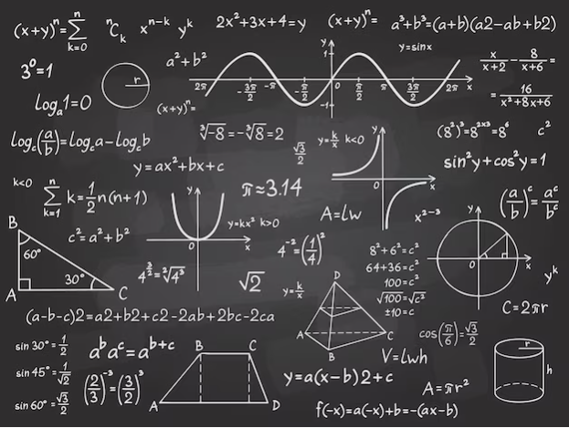

Cálculo é uma disciplina da matemática que estuda as mudanças e variações das grandezas. Ele se divide em Cálculo Diferencial, que analisa as taxas de variação e derivadas, e Cálculo Integral, que lida com a soma de infinitos pequenos elementos para calcular áreas e volumes. O estudo de limites é fundamental para entender a continuidade e a definição de derivadas e integrais. Aplicações do cálculo estão presentes em várias áreas, como física, economia e engenharia. A resolução de problemas envolve o uso de funções, sequências e séries infinitas. O cálculo é essencial para a modelagem de fenômenos complexos do mundo real.
